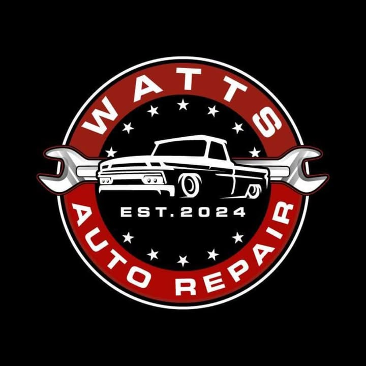

General repair
Front axles and everyday mechanical fixes.
Ask about general repair →
Watts Auto RepairLocally owned auto repair on South Falls Boulevard, where Cody is thorough, transparent and does not keep you waiting.
Front axles and everyday mechanical fixes.
Ask about general repair →Truck and SUV leveling jobs done right.
Ask about leveling & lift work →Straight answers on what your vehicle needs.
Ask about diagnostics →Cody is called the best mechanic in town: thorough, transparent, and the prices are hard to beat.
Replaced front axles quickly and professionally; the car now drives smooth as glass.
1430 S Falls Blvd, Wynne, AR 72396
Call nowGet directionsEmail codywattsautorepair@gmail.comFacebook page| Mon–Fri | 8 AM–5 PM |
|---|---|
| Sat–Sun | Closed |